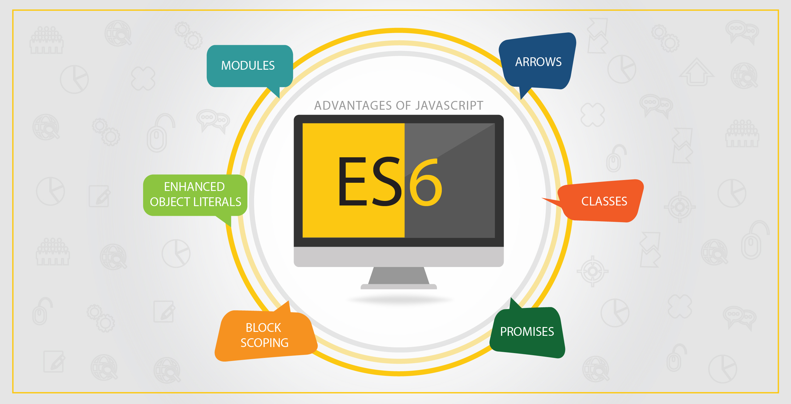

${title}
${teaser}
${body}
Rush of Libraries and Frameworks

Architechting your app by choosing best of design pattern.
Source : Addy Osmani
var counter = (function() {
var privateCounter = 0;
function changeBy(val) {
privateCounter += val;
}
return {
increment: function() {
changeBy(1);
},
decrement: function() {
changeBy(-1);
},
value: function() {
return privateCounter;
}
};
})();
console.log(counter.value()); // logs 0
counter.increment();
counter.increment();
console.log(counter.value()); // logs 2
counter.decrement();
console.log(counter.value()); // logs 1// IIFE - imidiate invoking function expression
(function () {
// ... all vars and functions are in this scope only
// still maintains access to all globals
}());
(function ($, CSLib) {
// now have access to globals jQuery (as $) and CSLib in this code
}(jQuery, CSLib));
// you can write any plugin or jquery plugin in this way.
(function($) {
// jQuery plugin code here
})(jQuery);
Sometimes you don’t just want to use globals, but you want to declare them. We can easily do this by exporting them, using the anonymous function’s return value. Doing so will complete the basic module pattern, so here’s a complete example:
var MODULE = (function () {
var my = {},
privateVariable = 1;
function privateMethod() {
// ...
}
my.moduleProperty = 1;
my.moduleMethod = function () {
// ...
};
return my;
}());
Problems when splitting code in multiple files
var MODULE = (function (my) {
my.anotherMethod = function () {
// added method...
};
return my;
}(MODULE));
Our module will have gained a new public method named MODULE.anotherMethod. This augmentation file will also maintain its own private internal state and imports.
Flexible Multipart Module
var MODULE = (function (my) {
// add capabilities...
return my;
}(MODULE || {}));
In this pattern, the var statement is always necessary. Note that the import will create the module if it does not already exist.
var MODULE = (function (my) {
var old_moduleMethod = my.moduleMethod;
my.moduleMethod = function () {
// method override, has access to old through old_moduleMethod...
};
return my;
}(MODULE));
//File: calc.js
var CalcModule = (function($, pub){ //jQuery will still be available via $
var mem = new Array(); //private variable
pub.storeInMemory = function(val){
mem.push(val);
};
pub.retrieveFromMemory = function(){
return mem.pop();
};
return pub;
})(jQuery, CalcModule || {});//File: calc_functions.js
var CalcModule = (function($, pub){
pub.add = function(a,b){
var result = a + b;
pub.storeInMemory(result);
return result;
};
pub.sub = function(a,b){
var result = a - b;
pub.storeInMemory(result);
return result;
};
return pub;
}(jQuery, CalcModule || {})); var CalcModule = (function(){
var mem = new Array(); //private variable
var storeInMemory = function(val) { //private function
mem.push(val);
};
var add = function(a, b) {
var result = a + b;
storeInMemory(result); //call to private function
return result;
};
var sub = function(a, b) {
var result = a - b;
storeInMemory(result); //call to private function
return result;
};
var retrieveFromMemory = function() {
return mem.pop();
};
return {
add: add,
sub: sub,
popMemory: retrieveFromMemory
};
})(); (function($) {
$.CSCom_Nav = function(options) {
if ( typeof(options) == "undefined" || options == null ) { options = {}; };
var cS = {
options: $.extend({
menu: '#menu',
panel: 'body',
trigger: '.menu-trigger',
closeOnContentClick: true,
duration: 150,
easing: 'ease-in-out',
before: function(){ },
after: function(){ }
},options),
init : function() { ....},
openMenu: function() {....},
menu: '#CSCom_Nav-menu',
panel: '.CSCom_Nav-panel',
setStyle: function( ) { … }
};
return {
on: cS.init,
trigger: cS.triggerMenu,
open: cS.openMenu,
close: cS.closeMenu,
someComplexMethod: function( ) { … }
};
};
})(jQuery);
var sideNav = $.CSCom_Nav({
menu: '#sidenav',
trigger: '.menu-trigger',
duration: 300
…
});
sideNav.on( );
Ext.define('Person',
{
name : 'ABCD',
constructor : function(name){
if(name){
this.name = name;
}
},
getName : function(){
alert("My name is " + this.name);
}
});Ext.define('Student',
{
extend : 'Person',
schoolName : 'ABCD',
constructor : function(name, schoolName){
this.schoolName = schoolName || 'ABCD';
//call parent class constructor
this.callParent(arguments);
},
getSchoolName : function(){
alert("My school name is " + this.schoolName);
}
});
var newStudent = new Student('XYZ', 'ABC School');
newStudent.getName(); //output: XYZ
newStudent.getSchoolName(); //output: ABC School
Ext.define('TutorialApp.view.login.Login', {
extend: 'Ext.window.Window',
xtype: 'login',
requires: [
'TutorialApp.view.login.LoginController',
'Ext.form.Panel'
],
controller: 'login',
bodyPadding: 10,
title: 'Login Window',
closable: false,
autoShow: true
});
"The problem with object-oriented languages is they’ve got all this implicit environment that they carry around with them. You wanted a banana but what you got was a gorilla holding the banana... and the entire jungle". by Joe Armstrong, creator of Erlang
There are some use cases where we need to use Object Oriented style for e.g Libraries , Framework
Product development will bring constraint in OO style due to tight coupling of Components
MVC is not completely suitable for client side architecture , Unidirectional method is prefered
Global mutation, changes environment , create side effects
Testing is difficult for interconnected Objects
Lets explore Pure functional ways...
Pure functions take some input and return some output based on that input. They are the simplest reusable building blocks of code in a program. Perhaps the most important design principle in computer science is KISS (Keep It Simple, Stupid).
// impure
var minimum = 21;
var checkAge = function(age) {
return age >= minimum;
};
// pure
var checkAge = function(age) {
var minimum = 21;
return age >= minimum;
};
Pure functions are completely independent of outside state, and as such, they are immune to entire classes of bugs that have to do with shared mutable state.
JavaScript arguments are passed by reference, which means that if a function were to mutate a property on an object or array parameter that would mutate state that is accessible outside the function. Pure functions must not mutate external state.
Finally, we can run any pure function in parallel since it does not need access to shared memory and it cannot, by definition, have a race condition due to some side effect.
This is very much possible in a server side js environment with threads as well as in the browser with web workers though current culture seems to avoid it due to complexity when dealing with impure functions
// Impure function
function mouseOnLeftSide(mouseX) {
return mouseX < window.innerWidth / 2;
}
document.onmousemove = function(e) {
console.log(mouseOnLeftSide(e.pageX));
};
//Pure Function
function mouseOnLeftSide(mouseX, windowWidth) {
return mouseX < windowWidth / 2;
}
document.onmousemove = function(e) {
console.log(mouseOnLeftSide(e.pageX, window.innerWidth));
};
mouseOnLeftSide(5, 499) // ensure it works with width < 500// Impure - accessing document global directly
var getHTML = function(id) {
var el = document.getElementById(id);
return el.innerHTML;
}
// Pure - paas the document as dependancy - easy to mock test.
var getHTML = function(doc, id) {
var el = doc.getElementById(id);
return el.innerHTML;
}
// Unit Testing
var stubDoc = {
getElementById: function(id) {
if (id === 'causewaycom-nav') return { innerHTML: 'Twas brillig…' };
}
};
assert.equal(getHTML(stubDoc, 'causewaycom-nav'), 'Twas brillig…');
//=> test passes
// Dependancy Injection using Pure function from Causway UI styles
(function (window, document, jQuery) {
'use strict';
jQuery('input, textarea').placeholder({classname: 'placeholder-style'});
......
}(window, document, jQuery));
Pure functions are completely self-contained. Everything the function needs is handed to it on a silver platter. Ponder this for a moment... How might this be beneficial? For starters, a function's dependencies are explicit and therefore easier to see and understand - no funny business going on under the hood.
//impure
var signUp = function(attrs) {
var user = saveUser(attrs);
welcomeUser(user);
};
var saveUser = function(attrs) {
var user = Db.save(attrs);
...
};
var welcomeUser = function(user) {
Email(user, ...);
...
};
//pure
var signUp = function(Db, Email, attrs) {
return function() {
var user = saveUser(Db, attrs);
welcomeUser(Email, user);
};
};
var saveUser = function(Db, attrs) {
...
};
var welcomeUser = function(Email, user) {
...
};
The example here demonstrates that the pure function must be honest about its dependencies.
It will take some time to get used to these ideas, but soon you’ll find yourself applying them without even thinking about it. Your fellow developers and your future self will thank you.
This is where the magic happens
// ES5 we had to do these statements to define default parameters:
var link = function (height, color, url) {
var height = height || 50
var color = color || 'red'
var url = url || 'causeway.com'
...
}
/*They were okay until the value was 0 and because 0 is falsy
in JavaScript it would default to the hard-coded value instead
of becoming the value itself.*/
// In ES6, we can put the default values right in the signature of the functions:
var link = function(height = 50, color = 'red', url = 'causeway.com') {
...
}
//String interpolation is a much-needed new feature that is finally available in JS.
let name = 'Harry';
let occupation = 'Wizard';
console.log(`Hi! My name is ${name}. I m a ${occupation}`);
//String Method Old way and New way
//old way
var someText = 'hellokitty';
if (someText.indexOf('kitty') != -1) {
return true;
}
// is now
someText.includes('kitty');
var article = {
title: 'Hello Template Literals',
teaser: 'String interpolation is awesome. Here are some features',
body: 'Lots and lots of sanitized HTML',
tags: ['es6', 'template-literals', 'es6-in-depth']
}
var {title,teaser,body,tags} = article
var html = `
${title}
${teaser}
${body}
`
Hello Template Literals
String interpolation is awesome. Here are some features
Lots and lots of sanitized HTML
// old way
var arr = [12,5,42,55,10];
function doSomething(arr) {
for(let i = 0; i < arr.length; i++) {
if(arr[i] > 32) {
return arr[i];
}
}
}
// new way
arr.find(n => n > 32);
//example2
[ 1, 3, 4, 2 ].find(x => x > 3) // 4
//Array.from
let titleElements = document.querySelectorAll('.article .title');
let titles = Array.from(titleElements).map( t => t.textContent );
console.log(titles);//ES6 gives us an alternative way to assign variables.
let a = 12, b = 3;
[a, b] = [b, a];
// Swap the values inside a and b, without using extra variables.
var log = req.log, // log has username and password
username = log.username,
password = log.password ;
//In ES6, we can replace the ES5 code above with these statements:
var {username, password} = req.logIt might take some time to get use to the destructuring assignment syntax, but it’s a sweet sugarcoating.
//Quick object initialization of objects from variables.
// Old way ES5
var name = "Johnny", job = "Secret Agent", from = "England";
var person = {
'name': name,
'job': job,
'from': from
};
// New way ES6
let name = "Johnny", job = "Secret Agent", from = "England";
let person = {name, job, from};
// Old way ES5
var arr = [3,5,8];
var plusOne = arr.map(function(n){
return n+1;
});
// New way ES6
let arr = [3,5,8];
let plusOne = arr.map(n => n+1);
function Person() {
// The Person() constructor defines `this` as an instance of itself.
this.age = 0;
setInterval(function growUp() {
// In non-strict mode, the growUp() function defines `this`
// as the global object, which is different from the `this`
// defined by the Person() constructor.
this.age++;
}, 1000);
}
var p = new Person();
function Person() {
var that = this;
that.age = 0;
setInterval(function growUp() {
// The callback refers to the `that` variable of which
// the value is the expected object.
that.age++;
}, 1000);
}The value of this inside the function is not altered: it is the same as the value of this outside the function. No more var self = this to keep track of the current scope.
function Person(){
this.age = 0;
setInterval(() => {
this.age++; // |this| properly refers to the person object
}, 1000);
}
var p = new Person();
Promises, have been around quite a while and are defined by a spec called Promise/A+. ES6 has adopted this spec for its Promise implementation;
Other Promise libraries: Q, Bluebird, RSVP and others that adhere to this spec.
Promises give us a way to handle asynchronous processing in a more synchronous fashion. They represent a value that we can handle at some point in the future. And, better than callbacks here, Promises give us guarantees about that future value, specifically:
var fetchJSON = function(url) {
return new Promise((resolve, reject) => {
$.getJSON(url)
.done((json) => resolve(json))
.fail((xhr, status, err) => reject(status + err.message));
});
}
var itemUrls = {
'http://www.api.com/items/1234',
'http://www.api.com/items/4567'
},
itemPromises = itemUrls.map(fetchJSON);
Promise.all(itemPromises)
.then(function(results) {
// we only get here if ALL promises fulfill
results.forEach(function(item) {
// process item
});
})
.catch(function(err) {
// Will catch failure of first failed promise
console.log("Failed:", err);
});
// A Promise that times out after ms milliseconds
function delay(ms) {
return new Promise((resolve, reject) => {
setTimeout(resolve, ms);
});
}
// Which ever Promise fulfills first is the result passed to our handler
Promise.race([
fetchJSON('http://www.api.com/profile/currentuser'),
delay(5000).then(() => { user: 'guest' })
])
.then(function(json) {
// this will be 'guest' if fetch takes longer than 5 sec.
console.log("user:", json.user);
})
.catch(function(err) {
console.log("error:", err);
});
Source: Dave A.
function calculateTotalAmount (vip) {
var amount = 0
if (vip) {
var amount = 1
}
{ // more crazy blocks!
var amount = 100
{
var amount = 1000
}
}
return amount
}
console.log(calculateTotalAmount(true))
//output 1000;
function calculateTotalAmount (vip) {
var amount = 0 // probably should also be let, but you can mix var and let
if (vip) {
let amount = 1 // first amount is still 0
}
{ // more crazy blocks!
let amount = 100 // first amount is still 0
{
let amount = 1000 // first amount is still 0
}
}
return amount
}
console.log(calculateTotalAmount(true))
//output 0; //Const turns variables into constants, and they can’t be changed.
const pi = 3.14;
console.log(pi);
const PI = 3.141593
PI > 3.0
//Old way ES5
// only in ES5 through the help of object properties
// and only in global context and not in a block scope
Object.defineProperty(typeof global === "object" ? global : window, "PI", {
value: 3.141593,
enumerable: true,
writable: false,
configurable: false
})
PI > 3.0;
However, they were implemented via libraries, not built into the language.
//------ lib.js ------
export const sqrt = Math.sqrt;
export function square(x) {
return x * x;
}
export function diag(x, y) {
return sqrt(square(x) + square(y));
}
//------ main.js ------
import { square, diag } from 'lib';
console.log(square(11)); // 121
console.log(diag(4, 3)); // 5
//------ main.js ------ import the complete module:
import * as lib from 'lib';
console.log(lib.square(11)); // 121
console.log(lib.diag(4, 3)); // 5/------ myFunc.js ------
export default function () { ··· } // no semicolon!
//------ main1.js ------
import myFunc from 'myFunc';
myFunc();
Or a class:
//------ MyClass.js ------
export default class { ··· } // no semicolon!
//------ main2.js ------
import MyClass from 'MyClass';
const inst = new MyClass();